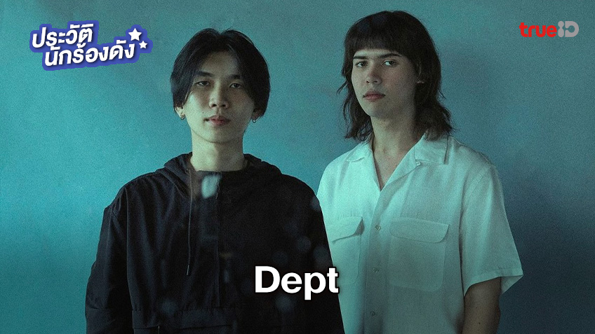

ประวัติ ความเป็นมาของคู่หู่ศิลปิน วง "Dept"
ศิลปินดูโอ้หนุ่มมากความสามารถทางดนตรีที่กวาดหัวใจแฟนๆ
ไปได้มากมายกับทุกๆผลงานเพลง ประกอบด้วย 2 หนุ่ม เบนซ์ ภวัต โอภาสสิริโชติ (ร้องนำ/กีตาร์) และ ลุค ทาวน์เซน (คีย์บอร์ด)
ศิลปินจากค่าย สมอลล์รูม ด้วยสไตล์ดนตรีซินธ์ป๊อปมีเอกลักษณ์ ทำให้พวกเขาเป็นที่จดจำอย่างรวดเร็ว และมีผลงานเพลงฮิตทะลุหลักล้านมากมาย
เช่น 17 | Hoo Hoo, ลา ลา ลา | La La La, คงต้องบอกลาแล้ว เป็นต้น
โดยพวกเขาทั้งสองคนนั้นมักมีการทำเบื้องหลังของเพลงไม่ว่าจะเป็นเนื้อร้อง เมโลดี้ ที่ต้องการเล่าเนื้อหาจากเรื่องจริงออกมาเป็นบทเพลงตามความรู้สึกนั้นๆ
ทำให้ผู้ฟังเข้าถึงเนื้อหาของเพลงได้ง่าย พร้อมไปกับดนตรีที่มีเอกลักษณ์ของพวกเขาในการใช้ซินธิไซเซอร์เข้ามาผสมผสาน นั่นจึงทำให้เพลงของพวกเขาติดหู
และขึ้นแท่นเป็นเพลงฮิตมากมาย
ผลงานเพลง วง Dept
-Just All The Night
-Cost
-Gossip
-หรือไม่ใช่
-ทำได้หรือเปล่า
-แล้วเธอจะรู้บ้างไหม
-ลา ลา ลา
-คล้าย
-ฤดู
-แค่วันพรุ่งนี้ที่ไม่มีเรา
-LetS Cry
-หยุดสักที
-หมดนี้ให้เธอ
-ตรงนี้แสนไกล
-เพราะเธอนั้นเป็นเหมือนดั่งโลกทั้งใบ
-คงต้องบอกลาแล้ว
-202X
-17
-ประกาศให้โลกรู้
-New!! อยากเจอจะทนไม่ไหว
ก้าวเข้าสู่ค่าย Smallroom
ค่าย Smallroom เป็นค่ายดนตรีที่อัดแน่นไปด้วยศิลปินมากความสามารถ โดยค่ายสมอลล์รูม ประกอบด้วยศิลปินในค่าย (อัปเดต 2023)
ทั้งหมด 18 เบอร์ คือ Tattoo Colour, Greasy Cafe’, Slur, The Richman Toy, The Jukks, Gene Kasidit, Polycat, Barbies, Summer Stop,
Penguin Villa, Two Pills After Meal, Image Suthita, Postbox, Television off, Death Of Heather, Daniel Ryn, wadfah และ Dept
Presentations Songs:
New!! single
Favorite Song
Song to Smallroom